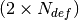

eigTB¶
-
class
eigTB.eigTB(lat)[source]¶ Bases:
objectSolve the Tight-Binding eigenvalue problem of a lattice defined using the class latticeTB.
Parameters: - coor – Sites coordinates (class latticeTB output).
- tags – Sites tags (class latticeTB output).
-
set_onsite_def(ind, on_def)[source]¶ Set specific onsite energies.
Parameters: - ind – Array. Site indices.
- on_def – Array. Onsite energy values.
-
set_hop_def(ind, hop_def)[source]¶ Set specific hoppings.
Parameters: - ind – Array. Hopping Indices, size .
- on_def – Array. Onsite energy values.
-
set_disorder_hop(alpha=0)[source]¶ Set a generic disorder.
Parameters: alpha – Default value 0. Stength of the disorder.
-
set_disorder_on(alpha=0)[source]¶ Set a generic disorder.
Parameters: alpha – Default value 0. Stength of the disorder.
-
get_eig()[source]¶ Get the eigenergies, eigenvectors and polarisations of the Tight-Binding model for non-Hermitian Hamiltonians.
-
get_eigh()[source]¶ Get the eigenergies, eigenvectors and polarisations of the Tight-Binding model for Hermitian Hamiltonians.